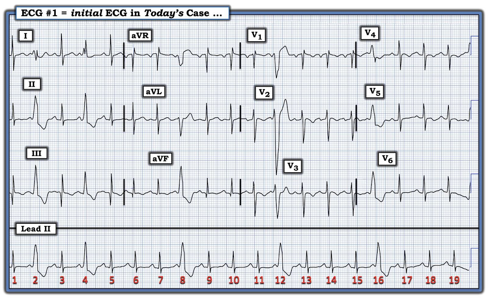
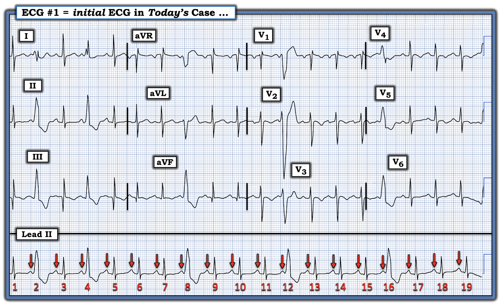
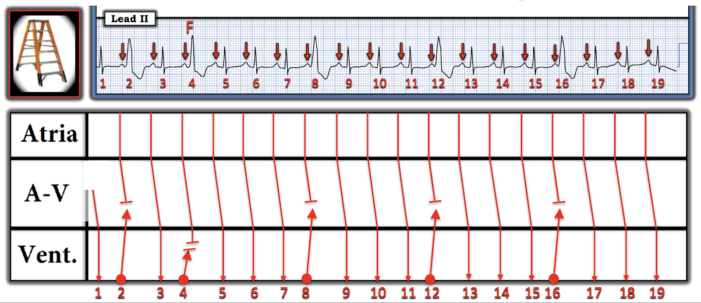
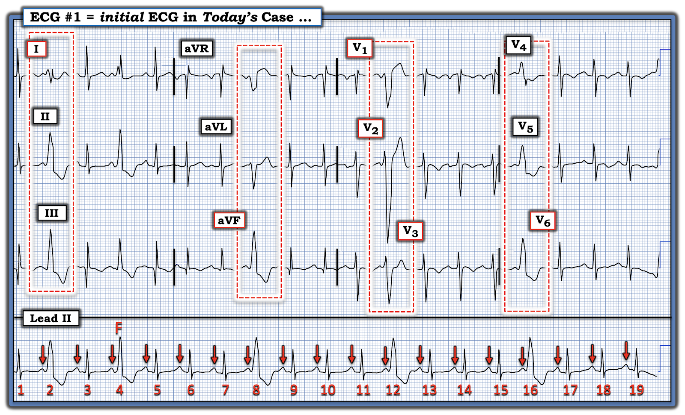
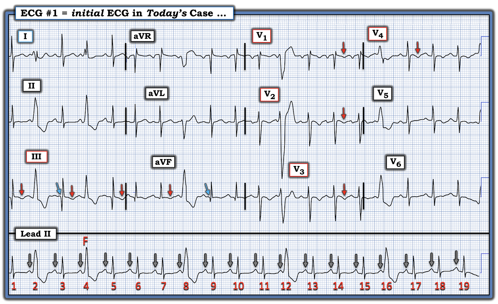
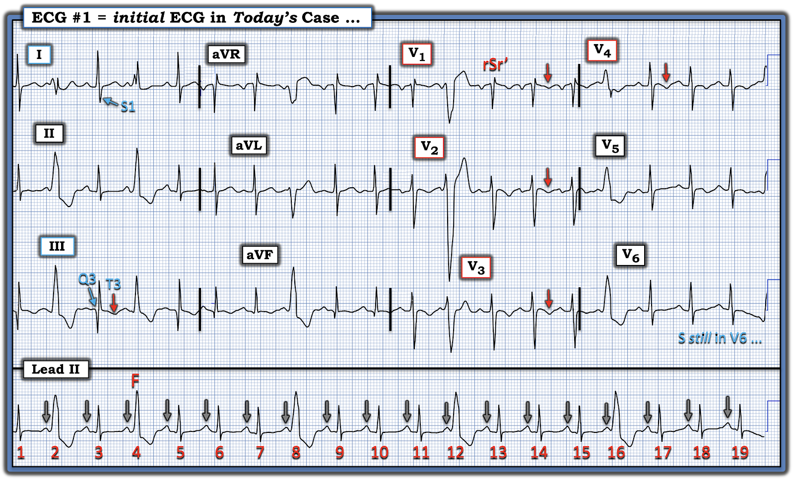
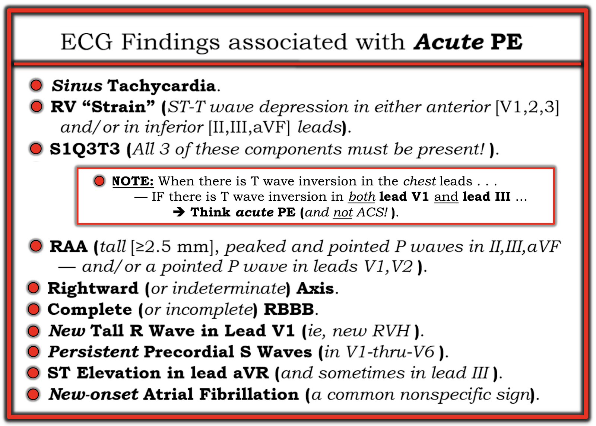

ECG Blog #496 — Khi III và V1 cho thấy cùng một điều?
Điện tâm đồ ở Hình 1 được ghi từ một người đàn ông trung niên — đến khám vì ngất và khó thở.
CÂU HỎI:
- Bạn có nên kích hoạt phòng thông tim (cath lab) không?
- Nếu có — Tại sao?
- Nếu không — Tại sao không?
- Các nhát rộng là gì?
- Các nhát rộng này có phải là hệ quả của chẩn đoán trong ca hôm nay không?


SUY NGHĨ BAN ĐẦU CỦA TÔI về CA BỆNH hôm nay:
Nhịp nền ở Hình 1 là nhịp xoang — vì có các sóng P dương trên dải nhịp chuyển đạo II dài, với khoảng PR phần lớn là hằng định và bình thường (các mũi tên ĐỎ trong Hình 2).
- Khoảng PR ngắn hơn ở phía trước mỗi nhát rộng (tức là phía trước các nhát #2,4,8,12,và 16).
- Các nhát rộng là PVC (ngoại tâm thu thất — Premature Ventricular Contractions).
ĐIỂM THEN CHỐT (PEARL) #1: Chúng ta biết chắc mỗi nhát rộng nêu trên là một PVC — vì có phân ly nhĩ thất thoáng qua.
- Lưu ý rằng mỗi sóng P xoang có mũi tên ĐỎ mà ta thấy trên dải nhịp chuyển đạo II dài ở Hình 2 đều đến đúng lúc! Điều này có nghĩa là các nhát rộng #2,8,12 và 16 hoàn toàn không liên quan đến các sóng P xoang đúng lúc đứng trước chúng (Đó là vì khoảng PR phía trước các nhát #2,8,12 và 16 đơn giản là quá ngắn để các sóng P có mũi tên ĐỎ này kịp dẫn truyền xuống thất!).
- Cũng lưu ý rằng các sóng P có mũi tên ĐỎ xuất hiện sau mỗi nhát rộng này cũng đến đúng lúc! Điều này chỉ có thể xảy ra — nếu các nhát rộng này "phát sinh từ bên dưới" (tức là phát sinh từ tâm thất).
Còn thêm bằng chứng cho thấy các nhát rộng #2,8,12 và 16 là PVC:
- Không có lý do gì để các nhát rộng này dẫn truyền lệch hướng — vì đây là các PVC muộn trong chu kỳ (xảy ra vào cuối tâm trương, tại một thời điểm trong chu kỳ gần như chắc chắn là sau khi thời kỳ trơ đã kết thúc). Ngược lại — các nhát trên thất dẫn truyền lệch hướng hầu như luôn xảy ra sớm hơn trong chu kỳ, tại thời điểm một phần hệ thống dẫn truyền vẫn còn trơ.


ĐIỂM THEN CHỐT (PEARL) #2: Bằng chứng cuối cùng cho thấy các nhát rộng ở Hình 2 là PVC — đến từ nhát #4, đó là một nhát hỗn hợp (fusion beat) (Xem giản đồ bậc thang (laddergram) ở Hình 3).
- Giản đồ bậc thang giải thích vì sao các nhát rộng #2,8,12 và 16 không làm thay đổi sự xuất hiện của các sóng P xoang đúng lúc (tức là các PVC này không dẫn truyền ngược đủ xa để ảnh hưởng đến các xung động của nút SA vẫn tiếp tục khử cực tâm nhĩ một cách đều đặn).
- Tình huống khác đi với nhát #4 — nhát này đứng sau một khoảng PR dài hơn khoảng PR phía trước mỗi nhát rộng khác. Kết quả là mũi tên ĐỎ thứ 3 này có thể dẫn truyền được một đoạn ngắn qua tâm thất cho đến khi gặp (tức là "hòa" với) nhát thất #4. Kết quả là một nhát hỗn hợp, trong đó hình dạng QRS của nhát #4 là trung gian giữa hình dạng của các nhát thất rộng hơn — và của các nhát xoang dẫn truyền bình thường (Xem ECG Blog #217 — để có phần thảo luận kèm minh họa về cách phân ly nhĩ thất giúp phân biệt PVC với các nhát dẫn truyền lệch hướng).


CÂU HỎI:
- Các nhát rộng ở Hình 3 là loại PVC nào? (tức là Bạn có thể khu trú các PVC này phát sinh từ vị trí nào trong tâm thất không?).
- Vị trí khởi phát của các PVC này có liên quan đến ca hôm nay không?
Để trả lời các câu hỏi trên — Hãy XEM Hình 4 — trong đó tôi đã đóng khung bằng các hình chữ nhật nét chấm màu ĐỎ hình dạng của các PVC này ở mỗi chuyển đạo trong 12 chuyển đạo.


ĐIỂM THEN CHỐT (PEARL) #3: Các PVC trên điện tâm đồ hôm nay có vẻ phát sinh từ RVOT (đường ra thất phải — Right Ventricular Outflow Track).
- Các PVC mà ta thấy ở nhát #12 và 16 — biểu hiện một hình ảnh giống dẫn truyền LBBB ở các chuyển đạo trước tim (tức là chủ yếu âm ở các chuyển đạo trước V1,V2,V3 — và dương hoàn toàn ở các chuyển đạo trước tim bên V5,V6). PVC có hình dạng giống LBBB phát sinh từ RV (thất phải — Right Ventricle).
- Ở các chuyển đạo chi — nhát #2 và 8 biểu hiện trục mặt phẳng trán thẳng đứng (nếu không muốn nói là hơi lệch phải). Với hình dạng QRS chủ yếu dương ở các chuyển đạo dưới — điều này gợi ý xung điện đang đi về phía các chuyển đạo dưới, vì các PVC này phát sinh từ vị trí cao trong tâm thất (trong ca này — từ RVOT).
- LƯU Ý: Ý nghĩa lâm sàng của vị trí khởi phát các PVC hôm nay sẽ sớm trở nên rõ ràng.
==================================
Quay lại với điện tâm đồ ban đầu hôm nay — và bệnh sử lúc vào viện:
- Bệnh sử hôm nay: Bệnh nhân là một người đàn ông trung niên đến khám vì ngất và khó thở.
Để rõ ràng, ở Hình 5 — tôi đã sao chép lại và đánh dấu điện tâm đồ ban đầu này.
- Như đã bàn ở trên, nhịp trên điện tâm đồ hôm nay là nhịp xoang (sóng P dương trên dải nhịp chuyển đạo II dài) — kèm các PVC muộn trong chu kỳ khởi phát từ đường ra thất phải (RV Outflow Track).
- Lưu ý các sóng Q ở chuyển đạo III và aVF (các mũi tên XANH ở các chuyển đạo này) — và — sóng T đảo ngược ở nhiều chuyển đạo (các mũi tên ĐỎ trong Hình 5).
CÂU HỎI:
Với bệnh sử nêu trên:
- Bạn diễn giải điện tâm đồ 12 chuyển đạo ở Hình 5 như thế nào?
- — Bạn có nên kích hoạt phòng thông tim không?


==================================
DIỄN GIẢI CỦA TÔI về điện tâm đồ 12 chuyển đạo hôm nay:
Để rõ ràng, ở Hình 6 — tôi tiếp cận việc diễn giải điện tâm đồ ban đầu hôm nay từ một góc nhìn khác với góc nhìn trình bày ở Hình 5. Tôi đã đánh dấu các dấu hiệu MẤU CHỐT theo góc nhìn mới này ở Hình 6:
- Tần số của các sóng P xoang xuất hiện đều đặn ở Hình 6 là nhanh (khoảng 115/phút) — nên nhịp nền là nhịp nhanh xoang.
- Có hình ảnh S1Q3T3 (tức là sóng S ở chuyển đạo I — kèm cả sóng Q lẫn sóng T đảo ngược ở chuyển đạo III).
- Hình ảnh rSr' ở chuyển đạo V1, đi kèm sóng S tận hẹp ở các chuyển đạo bên I và V6 — phù hợp với IRBBB (blốc nhánh phải không hoàn toàn — Incomplete Right Bundle Branch Block).
- Sóng S tồn tại suốt các chuyển đạo trước tim — và vẫn còn ở chuyển đạo V5,V6 trong Hình 6 (trong khi bình thường, ở các chuyển đạo trước tim bên có sóng R chiếm ưu thế mà không có sóng S).
- Sóng T đảo ngược đối xứng xuất hiện ở nhiều chuyển đạo trong các nhát dẫn truyền từ xoang (các mũi tên ĐỎ trong Hình 6 — sóng T cũng đảo ngược ở mức độ nhẹ hơn ở chuyển đạo aVF).


==================================
Tổng hợp lại tất cả:
Thay vì thiếu máu cục bộ do một biến cố tim cấp — tổng hợp các dấu hiệu điện tâm đồ mô tả ở trên trong Hình 6, ở bệnh nhân này đến khám vì ngất và khó thở (nhưng không đau ngực) — gợi ý mạnh mẽ PE cấp (thuyên tắc phổi — Pulmonary Embolus).
- ĐIỂM THEN CHỐT (PEARL) #4: Khi có sóng T đảo ngược ở các chuyển đạo trước tim — NẾU sóng T đảo ngược ở cả chuyển đạo V1 lẫn chuyển đạo III — Hãy nghĩ đến PE cấp (chứ không phải một biến cố tim cấp). Đây chính xác là điều ta thấy trên điện tâm đồ ở Hình 6.
- "Tăng gánh" thất phải (RV strain) cấp biểu hiện trên điện tâm đồ bằng sóng T đảo ngược (và/hoặc ST chênh xuống) ở các chuyển đạo trước và/hoặc ở các chuyển đạo dưới (đặc biệt ở chuyển đạo III). Khi thấy ở cả chuyển đạo trước lẫn chuyển đạo dưới, đi kèm nhịp nhanh xoang và các dấu hiệu điện tâm đồ khác phù hợp với PE cấp (như trình bày ở Hình 6) — hãy nghi ngờ PE dưới diện rộng (submassive). Các dấu hiệu điện tâm đồ này đã được nhận ra trong ca hôm nay — và được xác nhận bằng chụp CT phổi.
- ĐIỂM THEN CHỐT (PEARL) #5: Việc các PVC thường xuyên trên điện tâm đồ ban đầu hôm nay phát sinh từ RVOT — phù hợp với chẩn đoán PE cấp!
==================================
Để ôn lại — tôi bổ sung ở Hình 7 dưới đây danh sách các dấu hiệu điện tâm đồ cần tìm khi cân nhắc chẩn đoán PE cấp. Sự hiện diện của một vài dấu hiệu trong số này, cùng với bệnh sử lâm sàng gợi ý — đáng để đánh giá thêm bằng chụp CT phổi.
- Bệnh nhân hôm nay chắc chắn có bệnh sử lâm sàng gợi ý (ngất và khó thở — nhưng không đau ngực).
- Điện tâm đồ ở Hình 6 đáng chú ý với nhịp nhanh xoang — "tăng gánh" thất phải (với sóng T đảo ngược lan tỏa ở các chuyển đạo trước tim + sóng T đảo ngược ở chuyển đạo III) — S1Q3T3 — RBBB không hoàn toàn — sóng S tồn tại dai dẳng (vẫn còn ở chuyển đạo V6) — cũng như các PVC thường xuyên khởi phát từ RVOT.


==================================
Lời cảm ơn: Xin cảm ơn 유영준 (Seoul, Hàn Quốc) đã chia sẻ ca bệnh và bản ghi này.
==================================

==================================
Đọc thêm về chẩn đoán PE cấp:
- Mời xem ECG Blog #443 của tôi — vì bài này điểm lại kỹ lưỡng việc đánh giá bằng điện tâm đồ, siêu âm tim & chụp CT phổi khi nghi ngờ PE cấp, đồng thời cung cấp ĐƯỜNG LINK tới các ca khác.
- Cũng xem bài ngày 28 tháng Bảy năm 2025 trên Dr. Smith's ECG Blog để có thêm một ca lâm sàng minh họa khác (Ca bệnh do BS Magnus Nossen viết — kèm phần bình luận trong My Comment ở cuối trang đó).